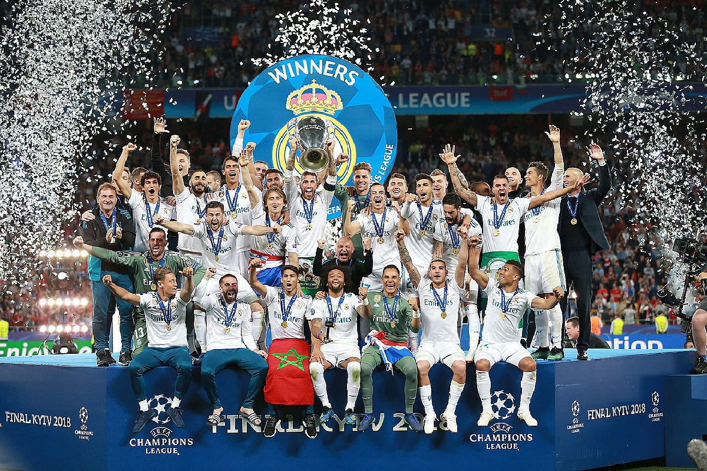

Fotbal je sport, který miluji. Hraje se mezi dvěma týmy, každý má 11 hráčů, a cílem je dát míč do branky soupeře. Je to skvělý způsob, jak se dostat do kondice a zároveň si užít spoustu zábavy.
Fotbal hraju již 14 let a tímto sportem žiju!
Pokud chcete vědět více o fotbale, podívejte se na oficiální stránku FIFA.

Fotbal má různá pravidla, o posouzení nedovolené hry rozhoduje rozhodčí, který má licenci a řídí vlastně hru. V nižších soutěžích je rozhodčí pouze jeden a s nižší licencí. Ve vyšších soutěžích jsou rozhodčí 3 (1 hlavní, 2 pomezní), někdy jsou i čtyři rozhodčí a více, ale to se jedná i o VIDEO-ROZHODČÍHO a rozhodčího u střídaček.